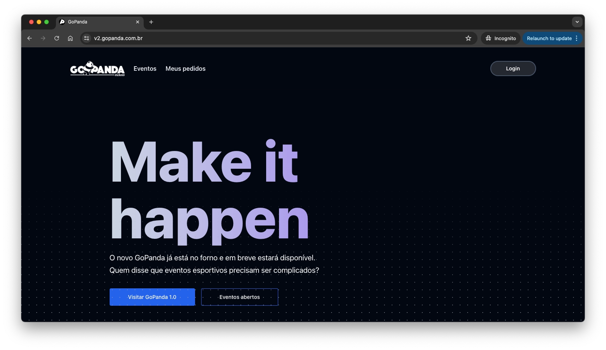
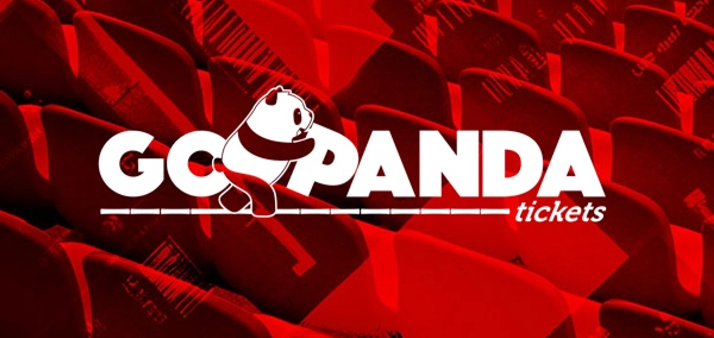
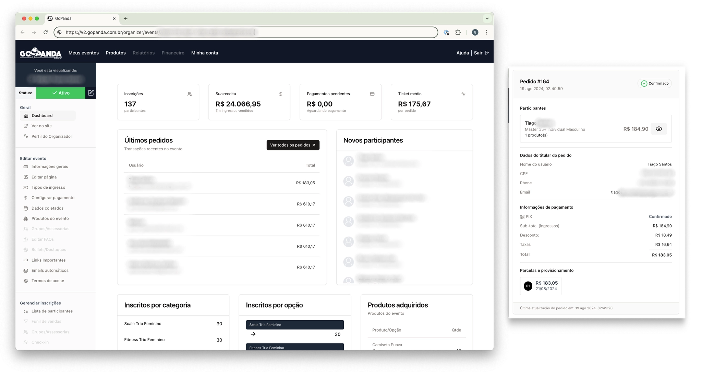

🐼 The GoPanda Case
How I redeveloped a ticket platform reducing server costs by 40% — and the lessons I learned.

Developing GoPanda from the ground up was a truly rewarding experience. I'm particularly proud of this project because it let me utilize a diverse tech stack and overcome unique challenges, while collaborating closely with the company's owners. As the sole full-stack developer, I reported to both the Tech Lead and the business owners.
What is GoPanda

GoPanda is a ticket-selling platform focused on sport competitions in LATAM — CrossFit events, mud races, and street marathons. The platform has over 50,000 registered participants and has processed more than 1 million USD in transactions.
Launched in 2015, the original PHP-based platform lacked a modern UI, new payment methods, and struggled to handle massive traffic spikes during popular events.
My Role & Challenges
- Redevelop the entire platform using modern web technologies — serverless functions, responsive design, and cost-effective solutions.
- Handle massive traffic spikes — over 10,000 users trying to register within 15 minutes for ~1,200 limited tickets, requiring a serverless, auto-scaling architecture.
- Wear multiple hats — sole developer on the project, acting as Frontend, Backend, and UI/UX designer, reporting weekly to a Tech Lead and the business owners.
- Maintain the PHP version in parallel to minimize disruption until the new system was ready to launch.
- Reduce costs — achieved a 40% reduction in server costs within the first month after launch by migrating to a serverless architecture.
Technologies
Frontend
Backend
Deployment
Feature Highlights
Event Dashboard
The heart of GoPanda for organizers — a comprehensive overview of sales metrics including registrations, revenue, pending payments, average ticket price, product stock, and category amounts in real time.

Sales Page & Cart Recovery
Organizers have full control over the sales page layout and branding. The cart recovery feature minimizes lost sales by reminding customers of their pending purchases, directly increasing conversion rates.
Registration & Ticket Management
Fully customizable registration forms, ticket categories and tiers, participant check-in, and product upsells — all managed from a single organizer interface.
Lessons Learned
Technical
- Scalability — efficient database queries, optimized API performance, and caching strategies to handle thousands of concurrent users without downtime.
- Security — secure authentication, data encryption, and regular audits for a platform handling sensitive financial transactions.
- Full-stack ownership — designing the database schema, API layer, and UI in isolation requires extra discipline around consistency and documentation.
Non-Technical
- Solo project management — prioritizing tasks, setting realistic deadlines, and keeping a development timeline on track without a team.
- Communication with non-technical stakeholders — translating business requirements into technical decisions and explaining trade-offs in plain language.
- User-centered iteration — gathering organizer and participant feedback early and often proved far more valuable than any assumption.
Conclusion
GoPanda is a testament to what a focused full-stack developer can build — a production platform handling millions in transactions, with a modern tech stack, built and maintained solo. The most valuable lesson: the intersection of good architecture, clear communication, and genuine empathy for your users is where great products are made.